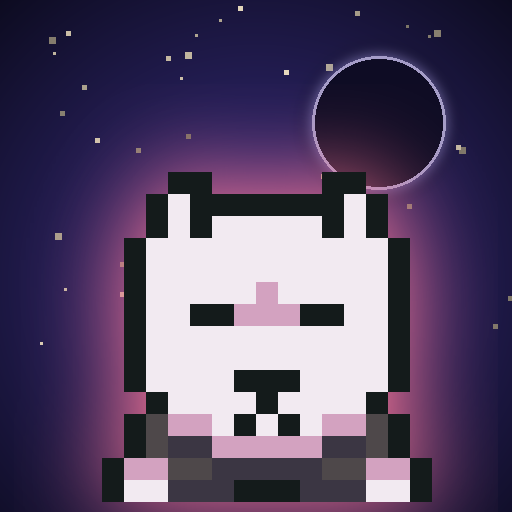

<- all projects

Moonless
PC
Volume
Live
Turn-based ninja stealth puzzles. Move when they look away.
The night the Shogun's envoy died, the Hidden Plum clan burned for it. Aki, its last ninja, escapes with her blind master's map and a fox spirit only she can see. Every time you move, the guards move, so read their sight cones, slip through the gaps and reach the exit unseen. Cross 80 maps in 5 provinces, face 5 boss duels, use 12 tools and outwit 10 kinds of watchers. Each map has three stars to earn and a hidden scroll to find, plus a new daily map.